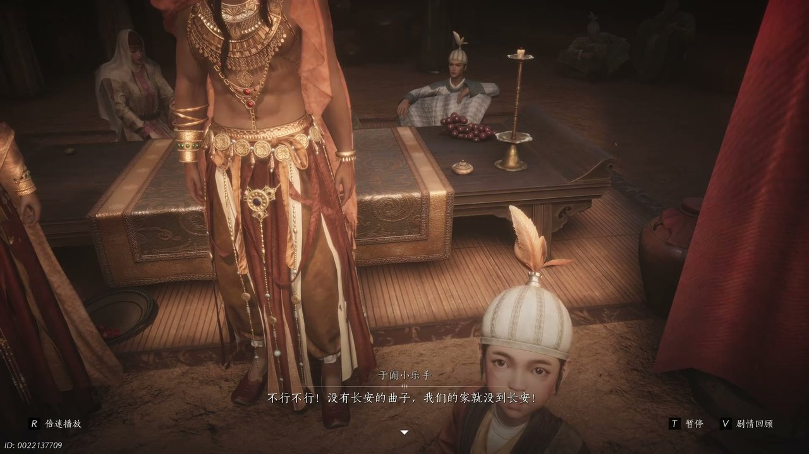
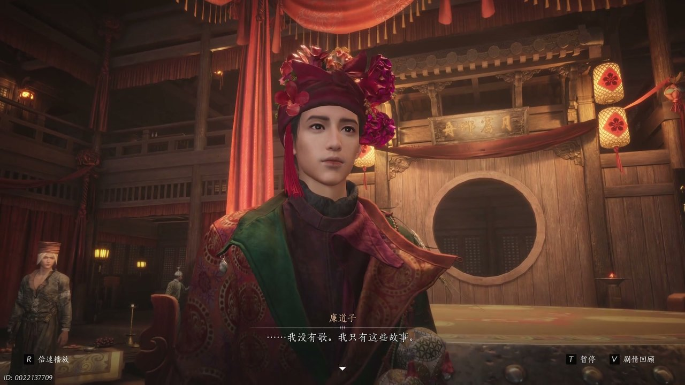
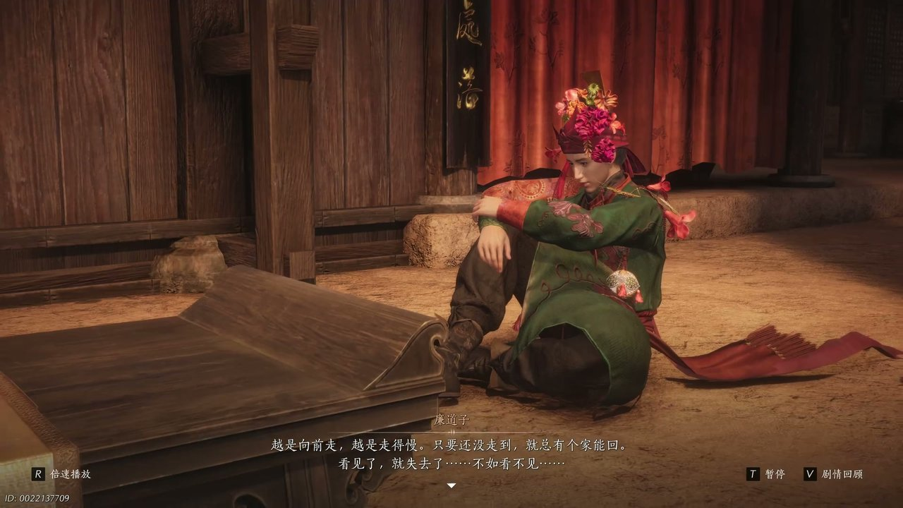
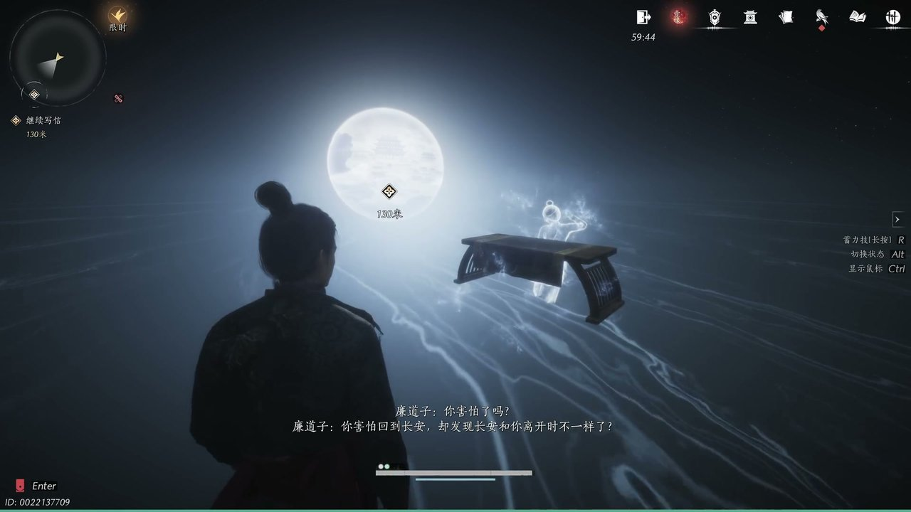
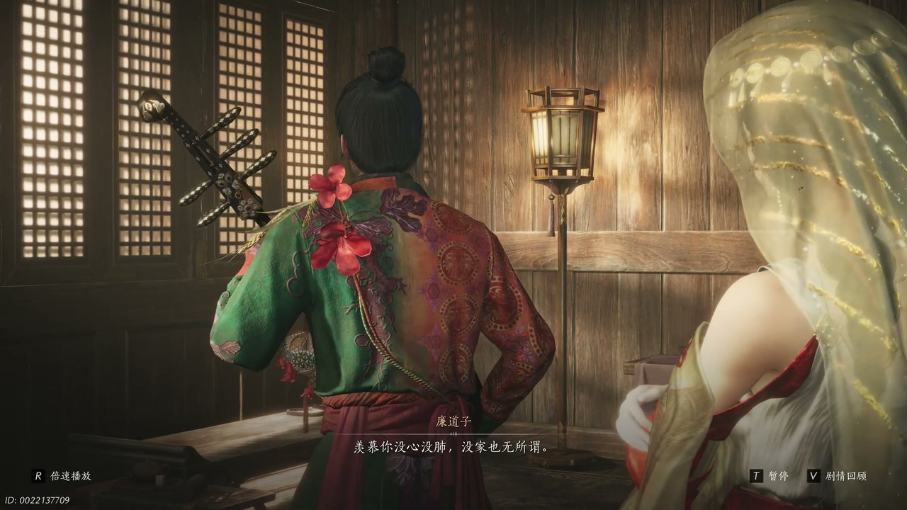
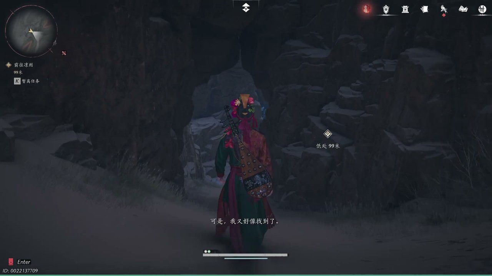

燕云背后的故事：第12集 廉道子
燕云背后的故事：第12集 廉道子

朋友们，上一集咱们说到——荒漠客栈相聚、异乡乐人合奏、飞镜阁遥望故土，三处线索交织让归途变得愈发沉重。新来的朋友可能纳闷，一众漂泊之人决意共谱一曲长安乐章，为何廉道子始终不愿抚琴？简单说，众人想要把各自故乡旋律融进一首曲子，借着音律把家园带到长安地界。可他哪知道，廉道子内心藏着不属于自己的长安记忆，根本无法弹奏出真正的曲调。这不，阿青姐弟不停劝说廉道子拨响琵琶，客栈之内一场关于故乡的倾诉缓缓拉开帷幕。

沙暴渐渐平息，破败客栈的厅堂灯火摇曳，木桌之上摆着各色异乡物件，阿青拿起身旁的琵琶递到廉道子面前，开口说道：“来拿上你的琵琶给我们弹你的家，弹长安。”阿赤在一旁附和，对着廉道子说道：“你是长安人，你来弹长安的曲子，我们把家乡的歌都串进去。”廉道子下意识往后退缩，指尖紧紧攥着衣摆，低声拒绝：“我不用。”他神色局促，低头避开众人期盼的目光，身体微微蜷缩，不愿接过那把琵琶。于阗小乐手拉着廉道子的衣袖不停央求，病弱舞姬倚着梁柱轻声劝慰，告诉廉道子弹奏好坏都无关紧要，只要弹出属于自己家乡的歌谣便可。众人纷纷放下手中事物，目光全部汇聚在廉道子身上，整个客栈只剩下屋外微弱的风声，所有人都等着廉道子奏响琵琶，可他依旧满心迟疑，迟迟不肯触碰琴弦。

廉道子见众人不肯作罢，缓缓松开紧握衣摆的手，坐在斑驳的木凳上，语气低沉地说道：“我弹不了，但我可以给你讲长安讲回家的故事。”于阗小乐人满脸失落，嚷嚷着不想听故事，只想听见琵琶的声响，催促廉道子赶紧抚琴。廉道子抬手示意众人安静，提议大家一同演绎一段归家旧事，自己扮演女鬼，邀请病弱舞姬扮演制香师。病弱舞姬咳嗽几声，摆手推辞，转而安排廉道子饰演自己的祖父，众人围坐在一起，准备聆听这段尘封的往事。舞姬缓缓开口，讲述廉道子祖父赶路回长安途中，偶遇一位带着异香香料的制香师，那香料由女鬼魂魄炼制而成，打开便会让人失去视听嗅觉，而这恰恰是女鬼甘愿魂飞魄散，只为再看心上人一眼的心愿。众人静静聆听，神色渐渐凝重，被这段凄美又悲凉的归家故事深深触动。

故事讲到女鬼魂飞魄散，病弱舞姬情绪激动，连声质问为何女鬼要为负心之人付出一切，接连的咳嗽让她身子不停颤抖。龟兹乐手轻声开口，道出这番话并非虚妄的传说，而是真正的归家心境：“如果家不一样了，回家的时候宁愿耳聋眼瞎。”廉道子缓缓接过话语，眼神望向客栈窗外茫茫黄沙，缓缓说道：“廉道子看一眼就魂飞魄散，是因为阴阳相隔，所以宁愿耳聋眼瞎，也不愿见到变了的那个人。”他起身走到窗边，指尖轻轻摩挲窗框粗糙的木纹，望着远方看不到尽头的戈壁继续诉说，越是朝着家乡前行，脚步反倒越发迟缓，只要还没有抵达故土，心中就还有一处家园可以依靠，一旦亲眼看见故土变迁，那份念想便会彻底消散。厅堂里一片沉寂，所有乐人都陷入沉思，每个人心中都泛起对故乡变迁的担忧。

廉道子转过身，目光直直看向一旁沉默的少东家，语气带着几分锐利：“你害怕回到长安，却发现长安和你离开时不一样了，你害怕那个长安已经没了、不存在了吗？”少东家站在阴影之中，眉头微蹙，没有开口回应。廉道子步步逼近，直言少东家一心奔赴长安，不过是执着于名垂青史的执念，想要求取功名成为大人物，一直在等候第三轮月亮降临。他语气满是指责，认定少东家背弃家人与故土，是一个虚荣的骗子。少东家依旧沉默不语，任由廉道子倾诉心中的不满，少女站在一旁面露诧异，不明白廉道子为何突然对少东家说出这般尖锐的话语。黄沙拍打客栈墙壁发出轻响，厅堂气氛变得压抑，廉道子说完之后，独自坐到角落，神情落寞。

黄沙彻底停歇，少女叫醒沉睡许久的廉道子，告知众人第二日便动身前往凉州，催促他收拾好行囊。廉道子望着整装待发的少女，轻声问道：“你说是这里到凉州更远，还是凉州到长安更远？”少女以为他想要偷懒赶路，直言长安路途更加遥远，还打趣询问廉道子莫非并非长安本地人。廉道子望着少女无忧无虑的模样，低声感慨：“我羡慕你，羡慕你没心没肺，没家也无所谓，没来处、没去处，也不在乎有没有容身之处。”他满脸苦涩，低头看着自己的双手，满心羡慕少女不用承受思念故土的煎熬，不知道凉州与长安究竟会是何种模样，不明白自己一路奔赴，到底要去往何方。少女察觉到他情绪低落，柔声安抚，可廉道子依旧沉浸在自己的思绪之中，不愿动身收拾行李。

众人再三邀请廉道子弹奏琵琶，少女拉着他回到厅堂，所有人都期盼着他奏响乐曲。廉道子终于袒露全部心声，坦言自己从未到过长安，只是儿时母亲常弹奏长安曲调哄他入眠，亲人离去之后，他便误以为长安是自己的故乡。他一路朝着长安奔走，可无论走多远，都无法靠近真正的家园，最后终于明白自己本就没有故乡。廉道子缓缓抱起琵琶，拨动琴弦，讲述狮子丸琵琶远渡重洋、不断追寻归宿的故事，告诉众人家乡并非固定的一处地方，而是藏在声音与曲调之中。听完这番话语，客栈里的乐人们纷纷说出自己珍藏的家乡印记，于阗小乐人挂念谷米花，龟兹乐人怀念母亲缝制的布鞋，病弱舞姬记着与弟妹相伴的时光。廉道子落笔写下一封家书，在信中感悟，有的家园不在身后，而是藏在前行的路途之中。
这一集看下来，我最大的感受就是执念归途之人，终会在音律里寻得心安。上一集里我们只知道共谱乡曲、廉道子拒弹琵琶、众人怀揣故土念想三条线索，到了这一集，我们知晓廉道子身世之谜、音律承载家园、故土早已变迁三条新线索。廉道子真正的故乡究竟在何处？狮子丸琵琶藏着怎样的过往？一曲乡曲能否慰藉所有漂泊之人？所有线索尽数收拢，众人即将跟随少东家前往凉州飞镜阁，廉道子心结解开，决意一同奔赴前路。下一集，登临飞镜阁眺望远方故土。有人好奇飞镜阁之上众人能否看见心中家园？廉道子的琵琶曲会奏响怎样的旋律？评论区留下你的想法，持续关注，咱们下一集登上凉州高楼，共听一曲思乡乐章。
关于我们
📱 公众号名称：三天游戏
✍️ 作者：曾三天
扫码关注公众号，获取每日最新资讯

商务合作与版权
商务合作 / 内容投稿 / 品牌推广
请关注公众号「三天游戏」后台留言联系
版权声明：本文由作者整理，转载需注明出处。